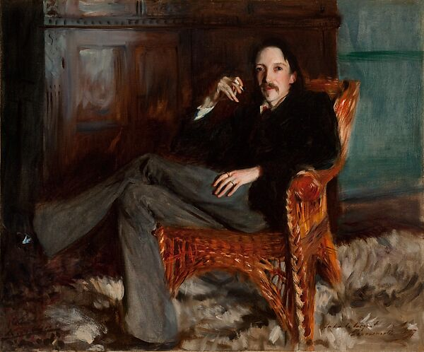
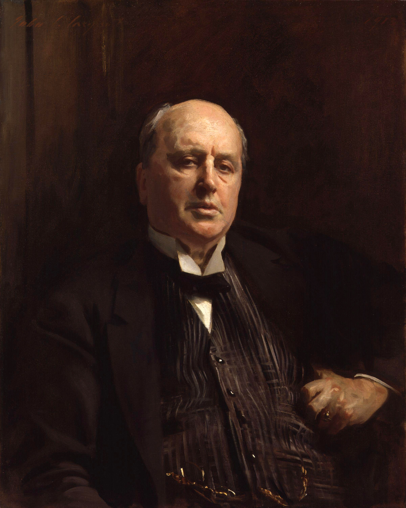
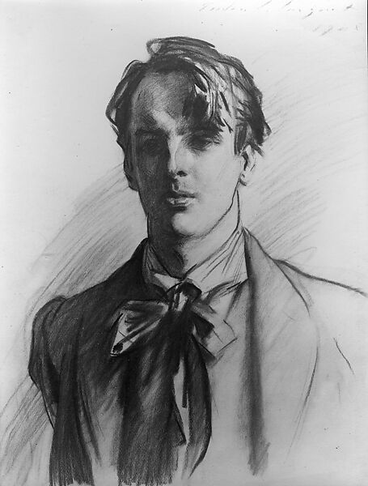
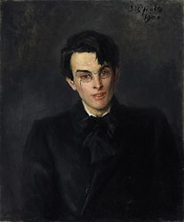

Novelists
Robert Louis Stevenson
Robert Louis Steven was a great adventure novelist whose works include Treasure Island, The Strange Case of Dr.Jeckyll and Mr. Hyde, and Kidnapped. Born in Scotland, Stevenson travelled widely during his life despite having a tendency toward extreme illness, especially that of the respitory kind. Sargent painted and sketched Stevenson several times, both seated and standing.
Henry James
Henry James is often regarded as one of the most important novelists who wrote in the English language. Among his works are The Portrait of a Lady, The Ambassadors, and The Wings of the Dove. His novella, The Turn of the Screw, is one of the most analyzed books written in the English language. This portait is a favorite of mine. Especially up close and in-person, there is a great sense of gravitas to the painting and a lovely contrast between the weighty rendering of the face and hands contrasted with the transparently scumbled pinstripes on the suit.
Poets
William Butler Yeats
William Butler Yeats is one of the most well-known Irish poets. He was awarded the Nobel Prize In Literature in 1923. Among his most famous poems are "The Circus Animals' Desertion," "The Second Coming," and "The Lake Isle of Innisfree." Here Sargent shows his facility for drawing in charcoal, using characteristically strong outlines and contrasting values. Just because I think it's interesting and for the sake of comparison, I've included another portait of Yeats below. It was painted by Yeats's father, John Butler Yeats, who was also a painter.
